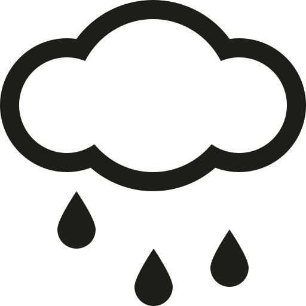

<h2 mat-dialog-title>Select desired climate condition</h2>
<mat-dialog-content>
  <mat-button-toggle-group [(ngModel)] = "selectedImage">
    <mat-button-toggle value='snow'>
      
    </mat-button-toggle>
    <mat-button-toggle value='broken clouds' matTooltip="broken clouds">
      
    </mat-button-toggle>
    <mat-button-toggle value='few clouds' matTooltip="few clouds">
      
    </mat-button-toggle>
    <mat-button-toggle value='mist' matTooltip="mist">
      
    </mat-button-toggle>
    <mat-button-toggle value='rain' matTooltip="rain">
      
    </mat-button-toggle>
    <mat-button-toggle value='scattered clouds' matTooltip="scatterd clouds">
      
    </mat-button-toggle > 
    <mat-button-toggle value='drizzle rain' matTooltip="drizzle rain">
      
    </mat-button-toggle>
    <mat-button-toggle value='clear sky' matTooltip="clear sky">
      
    </mat-button-toggle>
    <mat-button-toggle value='Thunderstrom' matTooltip="Thunderstrom">
      
    </mat-button-toggle>
  </mat-button-toggle-group>
</mat-dialog-content>
<mat-dialog-actions>
  <button mat-raised-button (click)="close()">Close</button> 
  <button mat-raised-button color="primary" (click)="save()">Report</button>
</mat-dialog-actions>
